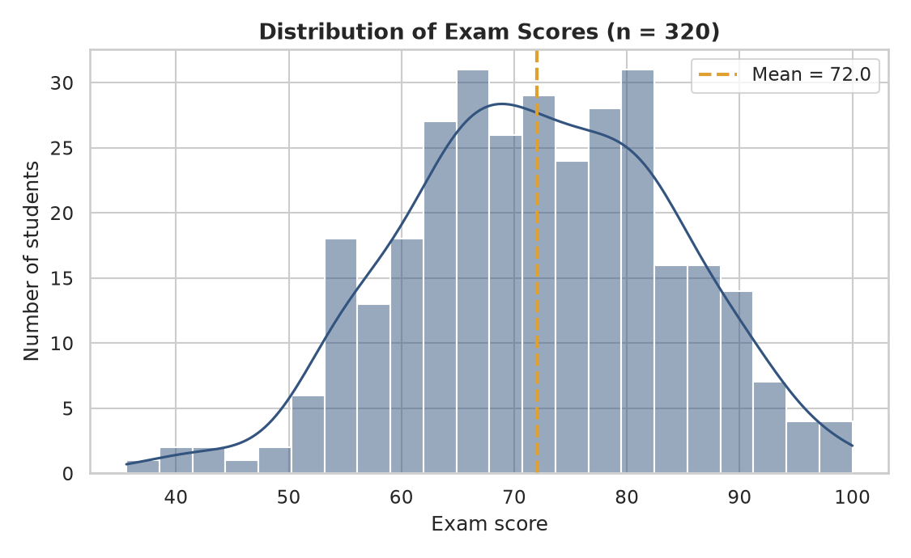
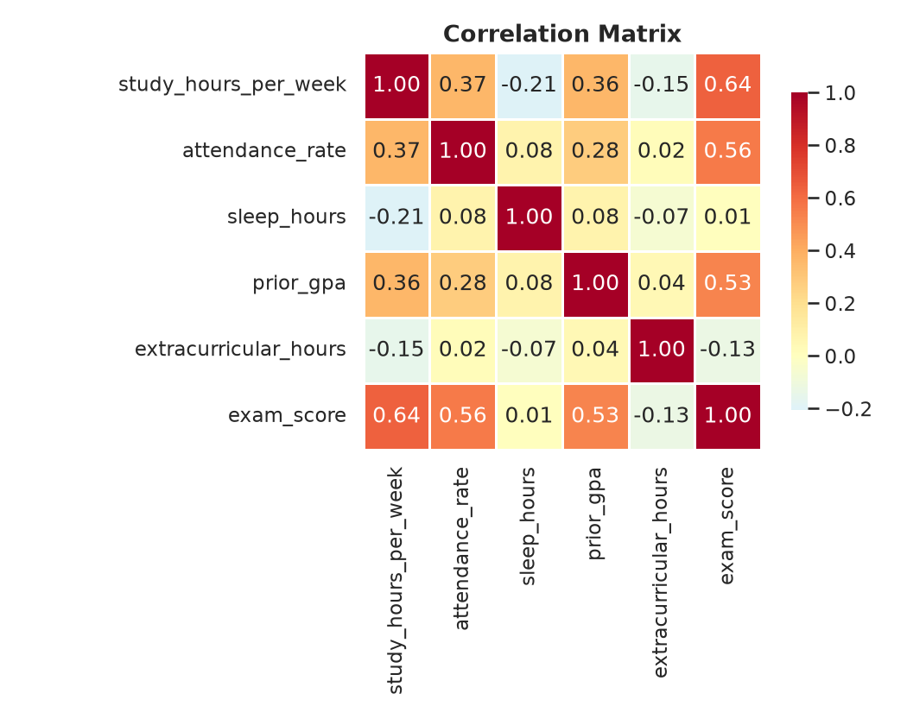
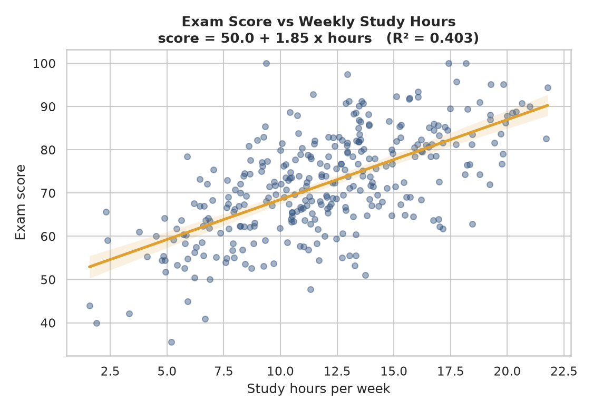
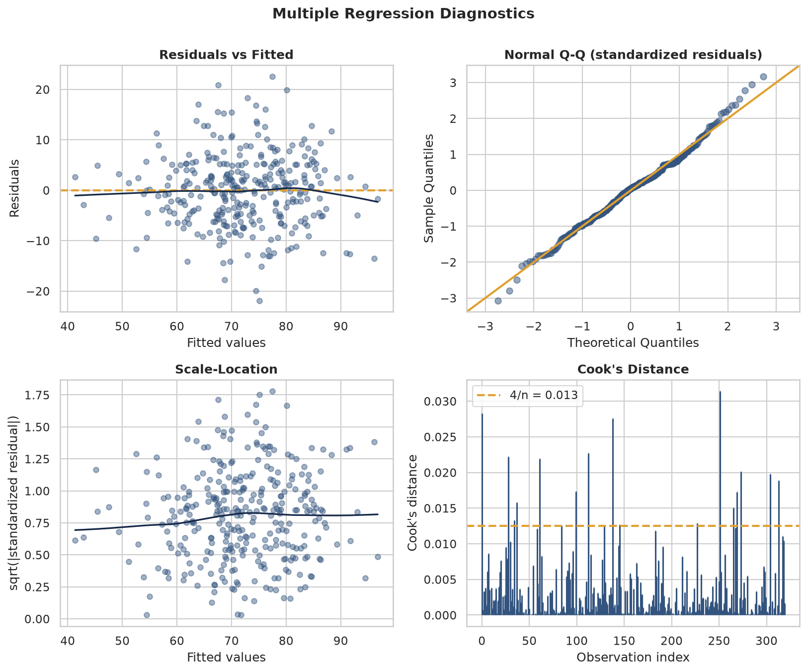
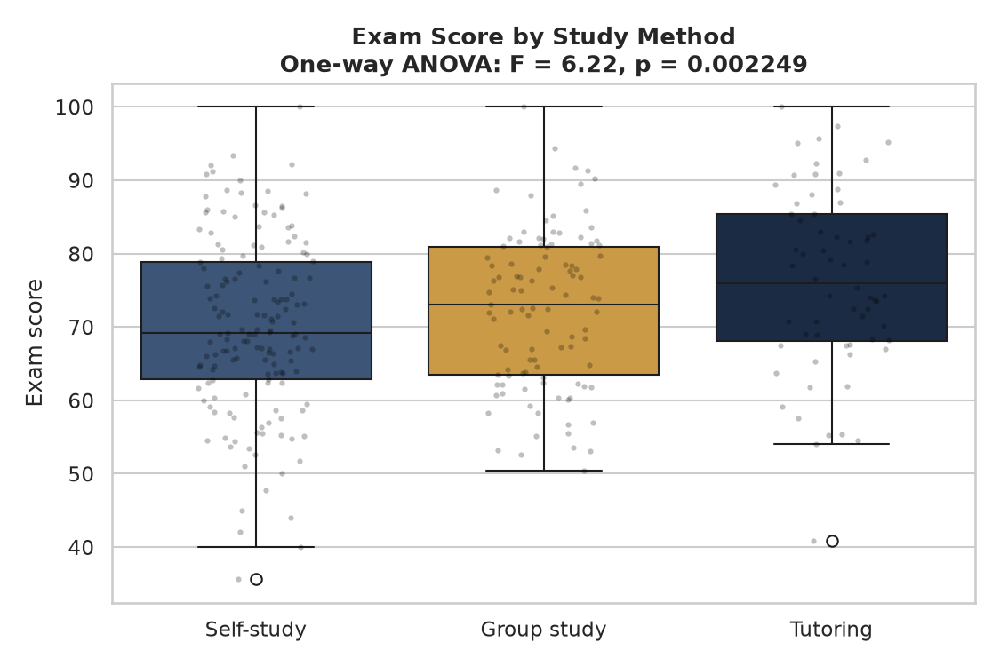

A reproducible simulation demonstrating how correlation, regression and hypothesis testing recover known relationships from noisy synthetic data.
This case study reconstructs the statistical techniques covered in an undergraduate project whose original files are no longer available. The dataset, code and results shown here were newly created for this portfolio and were not part of the original submission. The synthetic data contain predefined relationships and are used solely to demonstrate statistical analysis, not to make claims about real students.
The brief behind this piece of coursework was to take a dataset and demonstrate a full statistical workflow: describe it, understand how its variables are distributed, test whether variables relate to one another, and build a model that explains an outcome, with every step supported by formal hypothesis tests rather than eyeballed patterns.
The central question this page asks: can standard statistical methods recover the relationships deliberately embedded in a noisy simulated dataset? Because the dataset is synthetic, the true relationships used to generate it are known in advance (see the code), which turns the usual one-way question ("does this model fit?") into a two-way check: does the model recover the known signal, and are its own assumptions actually satisfied? Six variables were modelled for 320 students: weekly study hours, attendance rate, sleep hours, prior GPA, extracurricular hours, and study method (self-study, group study, or tutoring).
The dataset is fully synthetic, generated programmatically in Python (NumPy) with a fixed random seed so every result on this page is reproducible. It was deliberately built with realistic statistical structure rather than a perfect textbook relationship:
| Column | Description | Type |
|---|---|---|
| student_id | Unique synthetic student identifier | N/A |
| study_hours_per_week | Self-reported weekly study hours | Continuous |
| attendance_rate | Lecture/seminar attendance, % | Continuous |
| sleep_hours | Average nightly sleep, hours | Continuous |
| prior_gpa | Prior GPA on a 0–4 scale | Continuous |
| extracurricular_hours | Weekly extracurricular commitment | Discrete count |
| study_method | Self-study / Group study / Tutoring | Categorical |
| exam_score | Final exam score, 0–100 | Continuous (outcome) |
Before modelling anything, the outcome variable's own shape is worth describing: is it skewed, are there outliers, roughly what range does it cover? Exam scores were plotted and tested for normality with a Shapiro-Wilk test, purely as description.
This is descriptive context, not an assumption check for the regression later in this page. OLS does not require the raw outcome to be normally distributed; its inference (the t- and F-tests used throughout) rests on the model's residuals being reasonably linear, homoscedastic (constant variance), independent, and approximately normal: a property of y − ŷ, not of y on its own. Those residual diagnostics are run after the multiple regression is fitted, in Step 5.
Demonstrates: descriptive statistics, distribution visualisation, and correctly scoping what a normality test does (and doesn't) tell you.

With p = 0.417 (> .05), the Shapiro-Wilk test does not reject normality of the raw exam scores, and skewness is close to zero. That's a useful descriptive fact about this cohort, but it is incidental here: it is the regression residuals, checked in Step 5, that actually need to satisfy OLS's assumptions.
A Pearson correlation matrix across all numeric variables shows which predictors move with exam score, before any model is fitted, and just as importantly, how much the predictors move with each other.
Demonstrates: correlation analysis, statistical significance testing, and reading a correlation matrix for both outcome relationships and predictor intercorrelation.

| Variable | r | p-value |
|---|---|---|
| study_hours_per_week | 0.635 | < .001 |
| attendance_rate | 0.561 | < .001 |
| prior_gpa | 0.527 | < .001 |
| extracurricular_hours | −0.129 | 0.021 |
| sleep_hours | 0.009 | 0.879 |
Study hours, attendance, and prior GPA all correlate strongly with exam score. Extracurricular commitment shows a small but statistically significant negative correlation (r = −0.13), and sleep does not reach significance at all. But study_hours, attendance and prior_gpa are also correlated with each other (visible in the heatmap: study_hours–attendance r = 0.37, study_hours–prior_gpa r = 0.36), by design, so part of each variable's simple correlation with exam score is really shared, not independent, information. That's exactly what the multiple regression in Step 4 is for.
Study hours showed the strongest single correlation, so it was modelled first on its own: exam_score ~ study_hours_per_week, fitted by ordinary least squares (OLS) in statsmodels.
model = smf.ols("exam_score ~ study_hours_per_week", data=df).fit()Demonstrates: simple linear regression, interpreting slope/intercept, R² as goodness of fit.

Each extra hour of weekly study is associated with roughly 1.85 additional exam points. Study hours alone explain about 40% of the variation in scores: a substantial share, inflated somewhat by the fact that study hours is correlated with attendance and prior GPA and so is partly standing in for them too. Separating out each predictor's own contribution is what the multiple regression below is for.
All five numeric predictors plus study method (as a categorical dummy) were entered into a multiple OLS regression, to see how much of exam score they jointly explain and which stay significant once the others are controlled for. study_method is dummy-coded with "Group study" as the reference category (dropped alphabetically first by patsy), so the two reported dummy coefficients are each read as a difference from Group study, not from zero.
model = smf.ols(
"exam_score ~ study_hours_per_week + attendance_rate + sleep_hours "
"+ prior_gpa + extracurricular_hours + C(study_method)",
data=df,
).fit()| Predictor | Coefficient | p-value |
|---|---|---|
| Intercept (Group study, all numeric predictors = 0) | 12.78 | 0.001 |
| study_method [Self-study] vs. Group study | −1.83 | 0.050 |
| study_method [Tutoring] vs. Group study | +3.73 | 0.001 |
| study_hours_per_week | +1.13 | < .001 |
| attendance_rate | +0.28 | < .001 |
| prior_gpa | +7.73 | < .001 |
| extracurricular_hours | −0.52 | 0.014 |
| sleep_hours | +0.40 | 0.295 |
Together the predictors explain much more of the variation: R² = 0.637 (adjusted R² = 0.629), up from 0.403 with study hours alone. Study hours, attendance, prior GPA, and extracurricular hours are all significant with the others held constant; sleep stays non-significant. Self-study scores significantly lower than Group study (p = 0.050, right at the conventional cutoff), and Tutoring significantly higher (p = 0.001).
Because this dataset is simulated, the coefficients used to generate exam_score are known exactly (see 01_generate_dataset.py). This comparison is only possible with synthetic data (with real data the "true" relationship is never known), but it is a useful check that the model and code are working as intended.
| Predictor | Estimated | True (generating) |
|---|---|---|
| study_hours_per_week | 1.13 | 1.15 |
| attendance_rate | 0.28 | 0.27 |
| prior_gpa | 7.73 | 8.50 |
| extracurricular_hours | −0.52 | −0.30 |
| Self-study vs. Group study | −1.83 | −2.40 |
| Tutoring vs. Group study | +3.73 | +1.70 |
Most estimates land close to the true value given sampling noise and the moderate correlation between predictors. The two biggest gaps are extracurricular_hours (estimated effect nearly twice the true size) and the Tutoring contrast (estimated more than double the true size, off in a way that would matter if this were a real effect): both come from the smallest, noisiest slices of the data (few weekly extracurricular hours vary the score much; Tutoring is the smallest group at 64 students), a reminder that even a correctly-specified model can recover a noisy estimate for an effect it wasn't given much data to pin down.
A Variance Inflation Factor check, run on the full design matrix including the study-method dummies (not just the five numeric predictors), quantifies how much the predictors overlap:
| Predictor | VIF |
|---|---|
| study_hours_per_week | 1.45 |
| attendance_rate | 1.23 |
| prior_gpa | 1.23 |
| Self-study | 1.32 |
| Tutoring | 1.30 |
| sleep_hours | 1.13 |
| extracurricular_hours | 1.06 |
All VIFs sit well below the common concern threshold of 5, but they are meaningfully above 1.0 (unlike an independently-drawn predictor set would produce), reflecting the correlation deliberately built into study_hours, attendance and prior_gpa. The coefficients above remain interpretable, but they are not fully independent of one another: some of study_hours' apparent effect, for instance, is inseparable from its overlap with attendance and prior_gpa.
Demonstrates: multiple regression, categorical predictors via dummy variables and an explicit reference category, adjusted R², multicollinearity diagnostics (VIF) on the full design matrix, and validating a model against known ground truth.
A model's R² and p-values are only trustworthy if its assumptions roughly hold. Rather than trusting the raw-outcome normality check from Step 1, the multiple regression's own residuals were examined directly: linearity and constant variance (residuals vs. fitted, and scale-location), normality (a Q-Q plot and a Shapiro-Wilk test on the residuals themselves), independence (Durbin-Watson), and influence (Cook's distance, to check no single student dominates the fit).
Demonstrates: residual diagnostics, heteroscedasticity testing (Breusch-Pagan), and influence/leverage analysis: the checks that actually validate an OLS model, as distinct from the outcome variable's own distribution.

Residuals scatter evenly around zero with no funnel shape (constant variance), the Q-Q plot tracks the reference line closely with only mild tail deviation (approximately normal), Durbin-Watson sits close to 2 (little autocorrelation), and while 17 of 320 points exceed the conventional 4/n screening threshold for Cook's distance, the largest value (0.031) is far below the 1.0 level usually treated as concerning, so no single student is unduly driving the fit. On these checks, the model's assumptions hold up reasonably well.
Caveat before the result: an 85% cut point is arbitrary. Attendance is a continuous variable, and splitting it into two groups discards information and can make a relationship look cleaner (or noisier) than it is. The correlation (r = 0.561) and the multiple-regression coefficient (+0.28 points per attendance percentage point, Step 4) are the more complete and statistically preferable summary of this relationship; the t-test below is included as a worked example of the two-sample technique, not as the primary evidence for an attendance effect.
H₀: mean exam score is equal for students attending ≥85% of sessions vs. those attending less. Comparing 135 high-attendance students (mean = 77.81, sd = 9.87) against 185 lower-attendance students (mean = 67.81, sd = 11.39):
The gap is statistically significant, and of a size (about 0.85 standard deviations of exam score in this dataset) that a two-group summary won't hide. But it is also inflated relative to the "true" per-point attendance effect built into the simulation, precisely because attendance is correlated with study hours and prior GPA: the dichotomised comparison is partly picking up those other predictors too, which the continuous regression coefficient in Step 4 separates out.
H₀: mean exam score is equal across self-study, group-study, and tutoring students. Group means: self-study 70.09 (n = 153), group study 72.33 (n = 103), tutoring 76.18 (n = 64).
Unlike the earlier draft of this analysis (run on independently-generated predictors), this ANOVA is statistically significant: study method is associated with a real difference in mean exam score in this dataset. That agrees with the multiple regression in Step 4, which (holding study hours, attendance, GPA, sleep and extracurricular load constant) found Tutoring scoring significantly higher than Group study (p = 0.001) and Self-study scoring significantly lower (p = 0.050). The ANOVA here is unadjusted for those other predictors, so it doesn't by itself say why the groups differ, only that they do; the regression's dummy coefficients are the adjusted version of the same comparison. Neither test was followed by a formal post-hoc procedure (e.g. Tukey's HSD) to pin down exactly which pair of groups drives the omnibus result: a natural next step, not done here.

Demonstrates: two-sample t-testing, confidence intervals, one-way ANOVA, and being honest about what dichotomising a continuous variable costs you.
The overall workflow (distribution check, correlation screening, simple then multiple regression with a ground-truth check, residual diagnostics, and formal hypothesis testing) is the same structure used in every later analytics project in this portfolio, just applied here to its purest, most mathematical form. Because the data is synthetic, it also carries the unusual luxury of being able to check the model's answers against the ones built into the simulation.
Summary statistics, distribution visualisation, skewness/kurtosis, Shapiro-Wilk normality testing.
Pearson correlation matrices, significance testing, and correctly distinguishing correlation from causation.
Simple and multiple OLS regression, dummy coding with an explicit reference category, interpreting coefficients, R² vs. adjusted R².
Residual analysis (linearity, homoscedasticity), Breusch-Pagan and Q-Q checks, Cook's distance for influence, and VIF for multicollinearity on the full design matrix.
Two-sample t-tests, confidence intervals, one-way ANOVA, and being explicit about what an arbitrary threshold costs a continuous relationship.
pandas, NumPy, SciPy, statsmodels, Matplotlib and Seaborn used end to end from data generation to charts.
Translating statistical output (t, F, p, R²) into plain-language conclusions a non-statistician can act on.